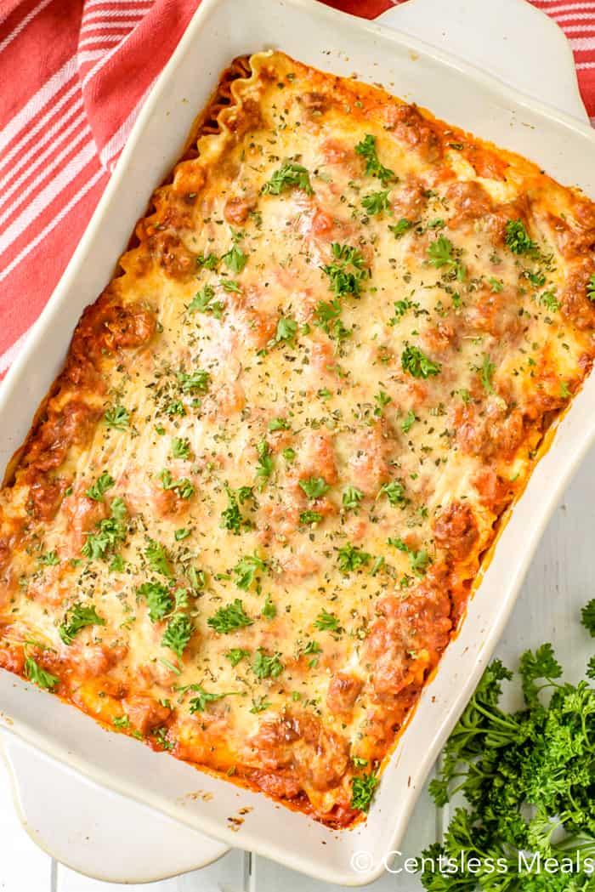

Cream Cheese Lasagna

Cream Cheese Lasagna recipe
This Cream Cheese Lasagna recipe is my secret weapon for impressing my friends and family.
For the longest time I wouldn’t share the recipe because I loved people asking me to make it for them.
However, since I have moved away from my friends I felt it was high time I shared the recipe, so they can make this whenever they want!
Ingredients
- 1 lb ground meat
- 24 oz pasta sauce
- 8 oz cream cheese softened
- 8 oz sour cream
- 8 oz shredded mozzarella divided
- 1 cup grated parmesan cheese
- 6 lasagna noodles cooked and drained
Instructions
-
Mix together the pasta sauce 1/2 cup of parmesan cheese, and cooked ground meat,
season to taste then set this mixture aside.
-
In a medium sized mixing bowl, add cream cheese, 1/2 cup of parmesan cheese,
half of the mozzarella cheese, and sour cream.
- Mix well and set aside.
-
In a 9 x 13 baking dish, ladle out a bit of sauce to slightly cover the bottom of the baking dish.
- Lay 3 lasagna noodles on top of the sauce.
- Using half of the cream cheese mixture, spread across the noodles evenly.
- Using half of the pasta sauce mixture, spread across the noodles evenly.
- Repeat and use the rest of the cream cheese mixture, noodles, and sauce.
- Top with remaining shredded mozzarella.
- Cover with foil and bake at 350 degrees for 20 minutes.
- Remove foil and cook for another 10 minutes or until cheese is slightly browned and bubbly.
- Remove from oven and let sit for 15 minutes before slicing and serving.